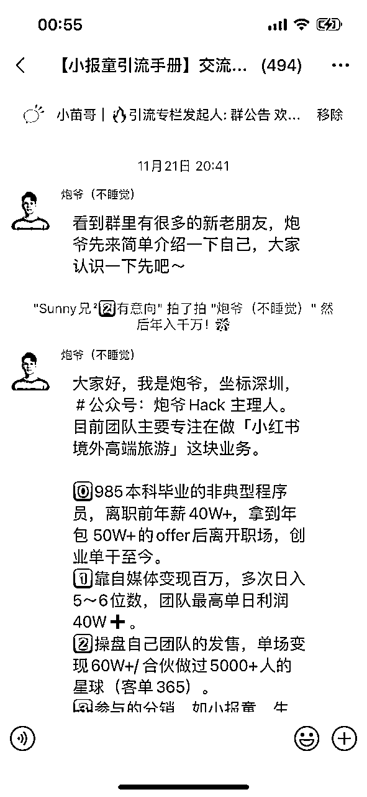

来源：https://dsehhuudnp.feishu.cn/docx/OdH2dA4roo20A3xPO4UcQ3Xvnpf
大家好，我是生财小苗哥，生财不算萌新的潜水圈友，主要领域社群运营及群发售策划，本文详细讲述我如何发现一个机会到商业化落地，并且做二次转化发售的全过程，会给大家分享一个三维发售的组合模板，提高转化率。
先讲一下我自己的经历，在8月份之前，我还是在职场，是一名财经主播，也是一家财经直播公司的股东和总运营，这个公司我们用了一年时间，从3个人做到了那会五个分场子。
正当我觉得可以有所收获之时，我却发现大股东在剥离我的公司股份，就是把公司里孵化出来的优秀主播剔除我这个总部盘子，大股东和主播之间出资新开公司，和我这里没有任何利润绑定。等我发现公司的账目和这个结算问题时，为时已晚。
一年多的时间，我熬了三百多个凌晨三四点下班的夜，换回来的就是这个结果，也怪自己当初过去轻信合作伙伴，没有签署合伙协议，没有以文字书面约定股东利益和权限，甚至这些退股和孵化新场地的出资方式，全都是口头协议。
对此我也想和圈友中要合伙创业的人说提个醒，再好的关系在谈生意合伙做项目时，把感性的情感放一边，先把理性的利益关系摆在前头，写好合伙协议中彼此的分工职责。当然，这不是本文的重心，而是一个萌新圈友从经历背叛受挫，到再次发掘机会的心路铺垫。
在生财3年了我都是潜水多却很少发文，和那些动辄几十万上百万的变现大咖来说，我总感觉自己的成绩不足挂齿，然而，生财的精神是：谈钱不俗气。生财鼓励分享，鼓励行动，于是鼓起勇气把最近一个多月，从0开始积累私域并且做低转高的产品转化，到六位数变现的案例，细致化拆解。希望能够对大家以后做小报童发售以及做低转高可单价的营销提供一个参考路径。
在离开原公司以后，我一直在尝试做副业规划，但是都找不到方向。曾经的直播激情和做事的节奏褪去，让我不断怀疑自己。一方面是现实生活的压力，我全职all in 自媒体，还要养家糊口，一方面是曾经的热情被现实屡屡打击，信心受挫。
在这里，我要特别感谢生财大航海，给了我向前一步的信心。
今年参加了醒醒教练主导的个人优势航海，我突然找到了自己的天赋优势，原来：我适合做战略规划，难怪每次帮助别人指明道路，初见霞光时，我能收获巨大的成就感！在航海里的探索，就像是被命运的礼物击中一般，极其兴奋和激动 —— 我已经，很久很久没有这种感觉了。
同期我也还报了生财的朋友圈航海，以前的朋友圈发的随性稀烂，经过生财的朋友圈大航海，我开始有意识到去运营自己的朋友圈，并且在航海期间也变现了几千，不少客户都是看了朋友圈的介绍直接找我付费做项目。
后来我知道自己需要深度的商业梳理，就深度链接了靠谱。有了生财的基础积累，我开始思考—— 要通过做什么事件，才能顺利出圈让别人知道呢？
IP的三个阶段：
工具人、陪伴者和专家。我不像生财大佬有那么多成绩，那就先从工具人开始，做一些资料的整合帮助别人。问题来了：要做什么资料整合才具有话题性、能出圈、价值大？一次在@梁靠谱 的销冠社群讨论里，我发现群里的自媒体IP们都对于引流很头疼，而引流恰好是一个自媒体人的刚需话题，永远绕不过去的。
无流量，不运营；无流量，不成交！
我决定做一个小报童专栏，名字就叫做《自媒体必备的引流手册》，集合100种互联网常见的引流方式和案例。这个得益于我之前在IDO老徐那参加过很多次小报童的分销，我越发意识到这个小报童专栏的对于私域运营的价值。
我想起亦仁说过：不管怎么样，你要先去赚到第一块钱。小报童的价格虽然不高，但它能带来一个新的开始。
任何事最难的不是宏大目标，而是无论多小的目标，我们都能够去迈出这一步。
于是我就找了圈子里的同伴 @大西CC ，我们临时就搭了一个“草台班子”，说行动就行动了。
我们在做小报童专栏之前，就一直在思考这个专栏的面向的人群和对应的需求。之前也分销过很多小报童专栏，我发现订阅好的专栏就特别垂直，即内容的精准度很高，专门为一类人解决一个特定需求。
举个例子，比如说老徐的小红书案例库，这个是当时特别火爆的一个专栏。对于要做小红书的人来说这个专栏就是一个全面的玩法手册，各种搞钱案例都有。
加上今年的小红书商业化进度暴涨，玩小红书的人越来越多。这个专栏的需求自然就很旺盛。
所以我在思考我的专栏定位时，就去看了那些讲流量的专栏，我发现他们都是单一某一个平台的案例，没有全域的玩法汇集，那这个就给我一个机会了。
我要做的专栏就是专注全域的引流，不再局限平台，而是玩法和思维的展示。
因此我的专栏定位为自媒体人必备引流手册，各个平台的引流案例我都可以收录，而且是具体平台+具体赛道+具体玩法+具体的数据展示。
这样方便大家去找自己的行业案例做对标参考，所以一经推出很快破100，两天突破300人，7天在一些大ip的加持下突破1100订阅。
专栏的内容我们也是迭代了三次，期间曾一度断更，因为我也需要静下来做内容的梳理和挑选，特别是在当时需要做项目的转化发售时，对于内容的搜集和整理又给耽搁了。
对于我们找的引流玩法案例，本质上不是写一个详细教程，而是做一个案例的拆解，比如说最近特别火的小红书红包引流案例，我们在专栏里讲解了这个玩法的流程，同时也放置了我们合伙人写的全套sop文档，只要去看基本上都是可以跑出来的。
除了小红书的这些引流案例，我们也加了很多其他平台的玩法介绍，当然后期我的规划是通过具体的行业赛道结合具体的引流钩子，以及到微信的上的一些破冰话术和转化方式，这样做的工作量会增大，但是专栏的价值属性会增强。
内容的来源我目前的采用的方式还是从生财这些顶级星球中收录跑出好结果的复盘案例文章，毕竟在哪里都有信息差，专栏就把这些引流部分的内容做个汇总，方便大家订阅后可以查看。
当然这些案例的文章来源，有明确作者的都会标注来源以及附上原文链接，在做这个事的时候，我也链接到了很多优秀的大佬，如果不是我要做内容整理收集，我可能都不会关注到，比如之前发布的一篇小红书的夜校引流，作者谢不言，超强的执行力和操作思维，让他从风标表中发现这个热点，马上实操就获得巨大的结果。
在某种程度上，我的专栏后面更想做引流案例领域的“生财风向标”，把具体的行业领域和玩法以及一些操作上的关键性动作，甚至是一些同行的加微信话术，破冰话术，承接的产品，都做一个整理。
把这个实现，我想这个专栏一定还会再迎来爆发增长。
这个运营实际上我理解的应该是分为2个部分，一个是专栏运营一个是配套的交流社群。
一：专栏运营
这个是我在主导，实际上我这几天一直在忙于发售和高客单价的产品转化，内容没有持续的筛选和更新。在这里我也给后来要做小报童的同学，当一个反面教材的案例。
内容一定要准备齐全。
我这个专栏在一开始是纯粹的突发奇想，然后看到了需求，就直接上架属于是边做边完善的那种，因此在内容更新的频率和质量上，会有一定的不足。
如果你也想做一个专栏，有两种玩法：
第一种，你本身就有很深厚的内容底蕴，即专栏的内容是不需要你再去刻意收集的，属于直接上手咔咔就能写的，比如老徐，巴导。大家看专栏的速度完全跟不上他们更新写的速度。
这样的专栏可以在发售前就准备好文稿，预售阶段直接发布，发布之后内容很快就可以增加一二十篇，有足够的内容满足用户的学习需求。
第二种，做引流造势。
这个玩法的逻辑就是用盲定的方式，快速做目标人群引流以及为新出圈的IP持续造势，同时可以转接后端的一些利润产品转化。
有一个同学就是这么玩的做的很不错-挽歌。
先做一个新专栏没有什么内容，只写一个简介。这个专栏的本质就是一个引流裂变的工具，因为他的玩法是把别人的私域通过分销倒流到他的微信上来，进入这个专栏对应的社群。
所有订阅这个专栏的同学，都可以参加专栏本身的朋友圈带货训练营，而这个训练营又是和其他朋友圈一些高手合作开发。所以这个专栏他就具备了多个KPI帮助分销推送，再加上他自己的成绩单带来的背书，在年轻大学生这个群体广泛传播。
专栏价格低，没写啥内容，但是这个后面配套设置的训练营和塑造的价值感很到位，因此即便没发啥内容，这个营销结果也很牛。
注意⚠️
如果你是一个素人，就是没有特别强的IP影响力或者特别亮眼的成绩，我们是不建议你用这样的方式，推广的数据会很打击人的。
另一点，如果你有垂直的内容也有对应的人群需求，只做朋友圈推广和社群转发的话，也是很难过500人的，大多数没有ip影响力的专栏都是两三百人，过500人是很一个很大的卡点，过1000那就是直接出圈了。过三千人订阅的专栏目前好像就那么一只手可以数的过来，老徐的一个小报童，以及生财的案例库。
二：专栏的社群运营
这一块是由我的合伙人大西主要负责。我们对于小报童的社群运营定位是做一个通知群和大家的自由交流群，不做那种陪伴群或者邀请嘉宾定时分享的营销群。
说说我们的这样做的原因，首先这种小报童专栏群，进群的门槛就是订阅小报童的费用，基本上是十几二十几块的，我们不可能在群里做重交付的，同时我也观察过很多大佬的的专栏配套社群，基本都是如此。
日常的运营只要做到2点就够了，比如最近的专栏有什么最新更新内容，哪些上了热门的，发群里提示大家看一下。然后就是最近有什么好的项目，可以在群里做一个预告发售，其他的用户提问简单几句能回答的就回答一下。
做小报童的专栏群，其实就是给自己囤积新的私域流量池。这种群里短期内不能频繁的做太多种类的产品营销，而且也要做好这里的用户私聊沟通，毕竟私聊出来的人，才能最大化的挖掘他的需求价值点。
大西在这方面做的超级无敌棒，我们有很多单都是她私聊直接成交的，在写这篇复盘文的头一天，还从这里成交了一个万元产品的合伙人。
有多个这个样的专栏群，实际上就是有了多个自己的私域流量池。
关于发售我也是参加过多次老徐的专栏分销，其中我学到了很重要的玩法，那就是做分销合伙人运营，即发售的关键KPI。
所以我们的整个运营模式是三层，类似一个金字塔分销架构。
我和大西做作为最上面的安排策划，分销合伙人是裂变主力军，再从合伙人中重点打造明星kpi，同时从新加用户中挖掘可裂变的潜力进入分销群，持续放大。
我们经常听到职场中说，一家销售公司80%的业绩是由20%的人创造的。那我们就要重点去挖掘这20%的重要kpi他们在哪里？
那么我们在发售时，就要快速的筛选出能够有很好转化率的关键结点，团结他们更好的去做转化。为此我们的设计流程是这样的。
当天发售时，给所有订阅的同学说一声，我们有分销合伙人群，推荐多少人可以入群、做分销合伙人的福利和权限，如果想参与分销拿佣金还赚名声，那就转发朋友圈出单多少位，我就可以邀请进群。
我们一开始是只要成交1个就可以拉群，因为你需要快速积累一波原始发售种子用户。然后随着人数的增加，把入群门槛提到3人，5人。
增加门槛前提是一定有了基础的分销人数，再来考虑提升入群门槛。比如分销合伙人有三五十人了，就可以筛选具备明星kpi的分销达人了，只有你提高了门槛，才可以激发他们的转化潜力。
同时我也这个分销裂变做了一个分销专用的参考评判数据标准，名字可以不同，但是数据参数都是一样的，以我们的引流专栏的分销排行榜为例
我们的叫：小苗哥【引流专栏】分销达人排行榜
特殊称号 达到门槛
斗帝境 分销100人以上
斗圣境 分销50人以上
斗尊境 分销30人以上
斗宗境 分销20人以上
斗皇境 分销10人以上
斗王境 分销5人以上
称呼都可以变，但是分销的参考数据都是默认的，这个设计原理和我看【斗破苍穹】小说的经历有关，也是最符合人性的攀比需求。入门易，拔高难。
这个排行榜发布以后，有好几位原本就随便发发的关键kpi，就为了获得那个斗圣斗帝的专属称呼，那真的是很卖力的推荐，一口气从30个推荐干到六十多。
还有一些细节分享给大家，就是咱们这个圈子其实是重合度很高的，你在搞什么动作，其他人是知道的或者说有所耳闻。哪怕他不参与你的活动，但是你的成绩和发售中的异常值，是会被其他人关注的。
那么这个排行榜上出现的一些新面孔，特别是还没融入其他圈子的人，这个就是非常好的出圈链接的机会，一个能获得分销斗圣的称呼，他的私域流量粘性该有多强？他的这个带货分销能力谁不喜欢呢？
自然而然，大家都想认识你。没有一个人会拒绝和有销冠潜力的人做朋友。
这个就是我们的分销合伙人了，那么这些合伙人如何激发和挖掘他们的分销动力，也是一门学问。
第一步，招募分销合伙人
这个最开始可以在自己的陪伴群或者一些有关系的合伙人群等，先发出一个求助信息，邀请和你关系好的人一起来助力起步。
当你有这么一二十人之后，开始让大家去发圈发其他平台做引流裂变。这时候每一个订阅了加你微信的同学，除了给他发订阅专栏领取的福利以外，你要在收尾的时候，也要加一句：
专栏目前正在招募分销合伙人，有意向参与分销的，可以先转发朋友圈出1单后，邀请进分销合伙人社群。
分销合伙人社群给到什么样的福利和政策，为什么值得你的加入？
把这些好处和福利激励写个海报文案，同步可以告诉订阅的用户这些分销的玩法和奖励机制。
第二步：挖掘异常值
我们讲的异常值是突然分销订单加速的，且短时间之内这个劲头还比较强，比如参与分销个把小时分销人数就有四五个了，还有的每天都有在出单的，这些人可以到小报童专栏的创作者中心有一个分销排行榜，根据上面的数据找到对应的分销者，邀请进群。

这些上榜的人，都是要重点维护一下关系的。毕竟能够为你分销这么多人，也是对你有强的助力和认可的，当然赚钱只是一方面，给你带来这么多新的付费流量，就值得去日常给到情绪价值和信息价值了。
我们的分销机制，佣金是60%，只有1级。这个也是做小报童默认的分销佣金比例。
分销奖励，分销3-5人可以进分销合伙人群，分销10人给予对应的诸如AI微信艺术二维码，20人送价值498的星球门票一张，送我们各自的陪伴群等等。
本质就是给予一些奖励措施，甚至如果你的咖位还不错，分销30-50人的可以给予一些咨询。这些奖励制度都可以根据自己现有的条件提供，主要得是大家当前比较需要的或者很有价值的。
说说我的思考：
在做这个小报童时，我们的确是想用这个打出一个成绩，获得曝光出圈的机会。但是我发现在这段时间做小报童的人越来越多，订阅过千的专栏也开始增加，那我们这个就失去了重点关注度，想要凭借这个出圈曝光，也就比较难了。
各种专栏现在是层出不穷，只要你是某个圈子的合伙人，那就是靠他们硬怼也能给你怼一点数量出来，但是这样的数据结果是没有太大参考价值的。
不能说明你的玩法多先进，也不能体现你的IP粘性多高，只能说你所在的圈子能量很强。但是这种体系内流量就像左手倒腾到了右手，体系内的总量没有增加。
所以我们做小报童时候，最开始是借助合伙人完成冷启动阶段突破100人，之后我们就开始做朋友圈的运营以及破圈链接，到其他人的生态圈子里，推荐自己的专栏，获得圈子里一些关键kpi的支持，从而引入新流量。
做小报童专栏我觉得这是一个非常好的付费筛选引流产品，只要有自己的课程或者垂直领域的实战经验，都是可以做一个小报童专栏的，这个发售就是为自己做引流，沉淀的微信社群就是自己的流量池。
我和大西说：在自己的地盘上，想卖什么都可以。
我们在专栏发售一周之后，订阅过了1100人，按理来说，其实过了四位数就是一个不错的突破。但是，我还想再挑战一把，我想开创一个小报童低价引流转高价营销的全流程案例。
因为据我的观察，小报童专栏发售后有一个明显的痛点：冲完了订阅量，流量沉淀在私域社群里，没几天就不见水花了。这么好的付费流量不运营就死群了，我不想这样白白消耗这些高质量的付费用户，所以我想做转化，做高客单价的转化。
只有这样做，我们的流量价值才能尽可能的挖掘，同时我做这个事也能开创一个先例，拿到好的结果才能顺利出圈，被人记住。
于是我把这个想法和大西一聊，获得她的强烈支持。
我们虽然是刚认识没几天，但因为都是靠谱合伙人，我们彼此之间的合作和协调超有默契，就是大家都会主动为对方多考虑一点。正是基于合伙人的天然信任和通力合作，才有我们后面拿下10万的成交额。
于是我就是开始了项目调研，为接下来的转化做变现设计。
提出这个转化发售高客单价三天左右的时间，我就一直在生财泡着刷精华帖，关注当前市场上的好项目。我也给大家分享一下我当时物色合适项目的判定标准：
1⃣️客单价和利润要高
客单价高才有门槛和代表性。我做这个事目标很清晰，就是完成一次由低到高客单价的转化发售。所以我不会选择几百的或者是一两千的报名费项目，选定的范围都是在3000-5000之间的。
只有这个价位的转化，才能尽可能的拉高整体的销售金额，等到写复盘时，这个数据也能拿的出手。当然我也不敢说自己最后能转化多少，但是前面一定要敢这样去想，去做这样的规划。
2⃣️容易上手门槛低
客单价高了，一定会劝退一些人的。那么对于项目的操作难度我思考再三直接去掉现在一些爆火的AI相关领域的项目。比如什么公众号爆文，AI变现，视频号带货等等。
我的判断原则是：内容制作越简单，上手拿反馈越容易。
那些用ai或者需要视频剪辑的，对于很多小白来说，特别是不太擅长电脑软件的同学。那光登陆一个梯子，就可以直接劝退了。至于剪辑视频，这个难度太大，不是说不会用剪映功能，而是很多人不具备剪辑思维。
剪辑个视频容易，剪辑出爆款视频就很难了。
所以我最后选定的平台就是小红书，因为这个平台这一两年关注度太高了，大家都很容易接受在小红书上做项目，也都知道小红书容易拿到结果。
3⃣️项目有热度和长周期
我之前做的是财经主播，我在讲股票板块炒作逻辑时，就一直会关注板块热点和周期这俩个维度。做项目也是这个逻辑，而且我发现在这个时间节点，很多旅游，民航，酒店的一些海外订单开始增加，对于春节，元旦的旅游需求出现了异常值。
我们之前三年口罩，这个旅游需求是极度压抑的状态，那么今年作为正式全面开放的元年，年底的旅游需求一定会有一波机会。
这一点我相信能够得到绝大多数人的认可，那么对于项目的周期性，我也在考虑，总不能像那个红包封面项目一样，玩这个月其他时间几乎没啥需求了。
所以在考虑旅游项目时，选择国外游一定是比国内的价值更大。
国内游，这个客单价太低，而且体验很差，这个容易宰客成了购物游，一旦出现那铁定是要投诉我们的账号，甚至那得不到佣金的。
国外游，客单价够高，都是万元客单价为主，且一出去都是团购，总客单价够高，这个对应的佣金就很可观。其次能出国旅游的这些人，本身就是有一定的经济基础，且有很好的消费意识，那么多积累这些用户在私域，以后卖其他的高客单价产品一样有的玩。
好产品，有付费能力才能买单。
而这个时候，我刚好记得前两天在合伙人群里，有一位大佬——炮爷发布过这个小红书海外旅游项目，并且愿意对合伙人开放合作权限，那这一瞬间我找到了方向，不用再筛选了，就是这个项目做转化。
4⃣️项目主理人要有IP背书
我选定这条有几方面考虑，首先我们要让用户买单，必须得让他信任你和你的产品。我进玩赚合伙人才2个月，在知识付费圈子里，我之前都是潜水居多。
大西要比我更早做IP打造，但是我们也没有在知识付费圈子里搞个啥动辄百万的战绩展示，所以推我们的IP去卖项目不合适的。
故此，发售的项目其主理人本身就要有影响力和知名度，这样我们会省去大量的介绍和信任铺垫，自带IP属性的项目操盘手无疑是最佳选择。
炮爷，一个月变现百万，前两天拿到亦仁的微天使投资，（当然这个是在我们已经完成发售之后获得的）之前就是战绩非凡也带过很多项目拿到了不错的结果。所以借助他自身的IP影响力我们的营销会更容易点。
5⃣️社交认同关系绑定
从发售专栏到最后的产品转化，我们这个项目的流量启动是基于玩赚这个圈子合伙人这个身份。
合伙人的产品可以互通，合伙人的私域流量当然也可以共享，如此一来合伙人不再是一个个体，而是真正的合伙人网络。对于发售产品和打造势能来说，这样的模式无疑是最佳选择。
缺产品的分销合伙人产品，有产品缺流量的联合几位合伙人直接倒流做群发售即可，又没产品又没流量的，那就直接参与我们的专栏分销，积累曝光去破圈链接其他人。
等以后搭建好了自己的产品，这些参与的经历以及链接到的人和圈子，都是以后自己产品发售的后援力量。
这个和炮爷谈合作之前，我其实是有点底气不足的，毕竟我也无法判定这个两个专栏群能够转化多少单。
而此时的炮爷，之前发了生财的旅游项目拿了精华帖，在我们的体系中这个变现百万成绩也是备受瞩目。所以我对于去找他合作，的确有点小担心会不会被拒绝。
但是真正加了炮爷之后，我才发现真的是自己想多了。炮爷人非常好，我一提出这个想法，马上得到他的响应，我们用了2天时间开展发售的节奏和路径设计，炮爷也提供了非常给力的支持，连他的御用设计师都调过来为我们做专属的海报设计。
当然我们这个准备的时间也比较仓促，中间就是一个对接群，开了两次腾讯会议讨论，然后细节都是大西用飞书沉淀出来完整的sop，大西做这些细节处理上，真的太让人踏实。她总是能够及时的把我发散的战略思维拉回来，专注当前的进度。
完整的路径设计，是按照浪发售的模型为基础，但是我们当时的时间很紧张，没有办法完全按照浪潮发售的节奏来，所以我们的规划就是先激活社群，先来分享两到三天预热，让大家关注群里消息。
然后我们到了预售期，我一天，大西一天，各自的铺垫分享，在第三天引入炮爷来分享，后面的时间就是直播转化。
这里我们还特别设置了一个资料官的角色。从专栏群里物色人选，然后负责为我们整理全部的分享资料，方便后来的或者之前没看到的消息的同学，再看一遍。

与此同时，两个群的数量我也担心基数不够，毕竟之前1号群很多都是合伙人，以及他们的好友，对于这个产品需求估计不及预期。因此我又提出同步再开一个3号小红书海外旅游项目的围观群。
这个围观群，我也一样设计了裂变机制，玩法类似我之前说的那个拉人奖励。只不过这个不需要付费订阅，有兴趣直接发朋友圈拉进群里即可。
我们给予的奖励就是达到20人，我们送各自的陪伴群，邀请30人有炮爷的一次10分钟文字咨询，其他的一些福利就不列举了。
反正这个玩法发出去之后，真的有一位同学，邀请了30多位好友进来。最后这个群里后面也出了客户。
我作为整个项目的主理人，负责统筹规划发售的时间节奏以及分工。
我个人因为有直播的经验和底子在，所以我负责直播间营销和炮爷连麦转化，大西的沟通才干靠前，特别能够给到用户情绪价值，所以她负责同步我和炮爷直播间的内容信息传递，我们的资料官负责同步到其他社群，然后整理汇总每天晚上上传的群公告栏。
炮爷因为是旅游项目的主理人，也是大IP。根据稀缺性原则，我只安排了他在发售和答疑那两天做直播间的连麦，给群里一些用户营造一个稀缺属性，错过分享损失百万一样的感觉。
我记得当初预约的人数是76个，实际晚上到场最高在线也是七十多人，我的视频号是企业号，也没发过啥视频，就是完全没啥推流，2个小时的直播，总场观不到300人，但是整个直播在线时常很不错，平均观看达到18分钟。
所以这些在线的同学，大西就会去主动私聊他们，直播间我是提前设置了大西为管理员，所以谁在线都看的到。包括我下播以后，也会截图发群里大家一起去分头找对应的好友去沟通成交。
一般情况下，群里的发售玩法都是先分享，展示自己的价值和成果，然后分享自己的现在的项目价值和学员成绩，最后就是上营销，如何加入，有哪些权限，交付方式时间等等。
做群发售要注意几点：
第一：每天的分享内容尽量提前安排好，比如一个为期三天的群发售。第一天的群预热要做好了，红包轰炸，拉动大家的注意力，公布群里接下来的安排。
第二：分享的稿子要提前写。
我这个人之前做的分享营销时，都是自己当场发挥的，因为之前每天有在自己的陪伴群做分享，所以在这个群里做分享基本上也能张口就来，但是如果不具备这个随时输出的话，还是不要打无准备之仗。
第三：互动带气氛
做群营销做直播营销我觉得都是在做气氛，把大家的热情氛围带动起来，讲解好项目具体的价值和交付内容，那么就需要一些“同学”来积极的响应，且最好能够发表一下自己对这个分享的思考，对项目的一个认知。
走心的评论和积极的响应，会带动群里一些还在保持观望的人参与到思考和讨论。只要他的念头在想这个事情，就有机会成交他。
而且很多人不会提问，不敢提问，不懂问什么，那我们群里和直播间就更需要一些贴心的嘴替，来把他们想问的东西讲出来，我们给予解答，自然就降低他的决策成本。
浪潮发售，这里严格意义上我还没学到精髓，但是炮爷他们玩的很棒。我对于浪潮发售理解，简单的分为这么几个阶段：
预热：发圈，发公众号，发视频，即将要做一件大事，讲述这个事对什么人有什么样的价值。
盲定：直接推送盲定机制，纯信任筛选一波，且盲定给到最低优惠价，制造价格稀缺性，快速锁定一部分忠实用户，作为后面预售发售的种子力量。
1:第一部
1⃣️作出承诺。
告诉客户我们的产品能给他们的生活带来变化，副业收入的提升。
2⃣️确立地位。
告诉潜在用户，他们为什么要听你的。你的成绩你的权威专业。
3⃣️传递价值，听取回答意见问题。
你不能一直吹产品，还要传递价值，也要让用户对产品提出意见，并回应这些意见。
2:第二部
感谢与回顾。
感谢大家对于之前第一天分享的内容提出的问题和评论，然后对简单回顾一下第一段内容。
回顾承诺。
迅速讲一下第一段的内容提到过的机遇，快速过不要占用很多时间。
简单回顾你的地位。
讲一下你的成绩影响力，让他们知道你是谁，以及他们凭啥要听你的，简明扼要，速战速决。
提供价值教点有用的东西或者分享点案例解析。
你要让他们尝到甜头，给他们创造一些真正的价值，教他们一两样马上就拿来用的实用技巧。
解答疑惑。
聊聊用户和你私聊时提出的两三个重点问题。要跟踪目标用户的痛点和疑惑，一直到你承诺的转变已经成真。
为第三部分预售内容预热。
你要让用户知道，接下来还有分享，并且透露一点分享的内容，增强他们对内容的期待感。
号召大家采取行动。
在你的星球，视频号，朋友圈，公众号等等媒体平台上，要求他们参与评论写感受。
3第三段预售：
跟我们学，慢慢来
一般我们做的额预售阶段，可以三到十天，看用户的反馈以及产品的单价。我们目前常用也就是一周的时间，基本上也差不多了。
预售阶段的核心：为用户创造性价值，给大家真实的有具体的权益的能够清楚知道来购买产品能解决什么问题的。
发售：
预售时间结束，我们会把用户的注意力从关注这个产品的价值转移到关注这个产品怎么买，同时是我们会利用利益恐吓来引导用户下单。
发售要巧用稀缺性原则，如果用户在发售期没有购买你的产品，那么他们将会遭遇不好的事情，比如错失最低价，比如你给的一些福利，比如能够改变他们现状的机会。
追售：追补尾款，私聊踢单。
在发售期间，有的人可能是不想错过最低价先付了定金，也有可能是不方便马上全款，那么发售结束后的3天之内，都要去跟进补齐尾款，私聊之前附定金的，还有一些很有兴趣但是还没付款的朋友，这个时间可以给优惠但是给限时，错过这个时间就涨价没有福利了，促进踢单。
直播卖项目，卖课程目前我这成绩还行，直播3场，累计成交10万多的销售额，重点是客单价高，单价在4980一个人。直播间卖199的不难，卖4980的项目目前倒是还没多少人这样发售。
这一块的细节，我会再写一篇直播发售流程，因为在完成这个复盘贴时，我又有帮助炮爷昨天发售新的高客单价项目，他的9980的合伙人产品，我三个小时助力他们卖了20多个合伙人，销售额达到20多万。
直播发售的价值在于撬动更大的外部流量，以及给信任用户更直观的权益和福利解答，没有什么比看到真人更有说服力了。
给大家一个公式
群+朋友圈+直播+私聊=高成交
我们发售这个小报童低价转高价品，这预热时间其实不够，直接是把预热预售三天整到一起，节奏还是比较快的，产品的植入推荐稍微急促了一点。如果我们在发售新产品时，可以提前做好市场的预热和预售铺垫，让产品推进来的更自然点，不是给人一种，你就是来把人汇集找项目割韭菜的。
而是大家现在需要有一个好项目来实操落地，掌握流量的玩法，项目变现，同时流量还有复利，可以有私域增值，这样推出的项目是很丝滑，是为了用户会员考虑，不存在割韭菜的感觉。
我们一般是七到十天，其中周五周六不建议做为正式发售的日期选择，因为这两天大家都是 想要晚上放松一下，上了一周的班，周五周六的晚上看群实际不多，我们的时间放在周二周三周四 做发售日都可以。这样后面的周五六七有更多的时间去追售。
我们在第一场直播发售时，把微信二维码打印在了一张A4纸张上，这样原本打算方便直播间的用户扫码添加，结果直播的过程中，到了四十多分钟时，在线人数到了70多位，直接被强制限制下播。那个时间点是我刚好准备开始营销发售的时间，这一下整的我们瞬间懵逼，3分钟之内快速撕掉那个带有二维码打印的a4纸，马上重新再开，同步群里。
虽然第二次人断崖式下跌，整个2个半小时直播下来在线人数也没超过20人，但是就这么整完了，我们当天也成功转化10多个4980的客户。
后面陆续直播下来，每场在线就没超过20人， 基本上就是十来个人上下浮动，还有很多是个位数在线的。这么拉垮的直播数据，我们最后也拿下了20多位10万多的成交。
直播间卖项目卖课注意一些违禁词：常见的就是其他各大平台的名字，以及各种夸大的话术，极限值，还有一些要求加我微信的话术，这些词容易被平台检测到，导致你的直播违规，更多的违规字可以自己收集一下，我不在这里展示了。
直播间画面：
如果你的电脑是windows系统的，那直接可以用电脑加手机直播，加一个无他伴侣即可，操作教程在抖音或者B站都是可以搜到的。
我认为的最佳的画面展示，那就是李一舟老师的那个画面风格，这个搭建我还不会，但是我十分想作出那个效果。而我现在在家的直播就是简单的手机加一个直播支架，坐在卧室的阳台窗帘下，为了展示直播效果，特地买了一个28块钱的白板，写上直播主题，就这么开干。
不追求一次完美，先开始干出成绩再说。
这一块是由我的合伙人大西负责，她的盖洛普中关系建立占据优势，能够很好的做沟通，适合去做踢单跟进。在我直播的时候她负责直播间和社群的信息同步，并且做意向客户的转化。
我们的沟通细节其实就是几个板块的测试。如意向度测试，有没有来听直播，听了对项目感觉如何，有兴趣来做吗，现在预算是先定金还是直接上车开始干，有没有兴趣跑出成绩以后做IP？
尽可能的挖掘客户的需求和价值，不仅仅是为了成单这个项目，也要尝试挖掘更高客单价的需求。
我们的朋友圈是属于同一时间推啥就集中发布，发布的角度多为项目的介绍，创始人成就，大家关心的交付细节，以及我们学员跑出的成绩。尽可能的把用户关心的问题通过朋友圈主动给予回应。
群+直播+私聊=成交
先完成再完美，想到就先勇敢的干，学会示弱和借势，主动利他不争小利，多做分享和曝光，向上社交，向下兼容。
打破信息闭塞最好的方式，就是加入一个优质圈子，并多做链接。生财无疑是最好的选择，基本上找项目链接牛人学技术来生财就对了。
20年我通过郭少走进了生财，打开了我对网赚知识付费世界的大门，与此同时我后面参与了那一期生财的抖音直播大航海，也是因为那一次航海，我积累了自己的直播经验和兴趣，我到现在还清楚的记得静伟老师和一乔老师的直播讲解。
那是我第一次参与生财航海，由于当时我没有产品也没资源和条件。航海学到了直播经验，直到22年开始做财经直播才用起来，如果没有生财的航海，就没有后来的财经直播3个人做起来5家分部。
也正因为生财，我链接到了太多太多的牛人，近距离围观他们的成长思考以及具体的实操项目，比如我的写作老师明白老师，我就是报了他的写作课，才有后面的日更200天。
进入圈子里，就要去找牛人链接，进他的付费社群，看看他们的产品和讨论的项目，有没有机会自己上手实操。
今年的418生财拉新，我也是因为参与了老徐团队的拉新活动，成功为生财邀请1位成员。
像这次我做的小报童经验，那就是一直在老徐的群里我参与分销很多次专栏，熟悉了全流程的玩法。还有这个小红书海外旅游项目，我也是因为在生财看到了炮爷的帖子后，我就意识到这个项目价值，做了标记寻找机会。
刚好后面我发现他在合伙人群里发布了对外合作的信息，这下天时地利人和全部到位，才有了这场从18.8转化4980高客单价变现10万+的全流程案例。
独木难支，像我这种战略思维第一，行动力和关系建立后靠的人。我想做成一件事，光靠我的战略规划是不行的，我需要有人来一起协助落实，同步做细节的把控。
因此第一次和大西做事情，我就发现她非常的专注做当前紧急和重要的事情，能够把我的超前战略思维拉回当下，不至于跑的太远。
在分销专栏的时候，我们的分销合伙人群，大家也是通力协作，我们提供产品他们做分销，朋友圈文案写的好的，贡献文案，会做海报的制作海报，有引流案例的分享案例，我们的成功是靠大家齐心协力做出来的。
和炮爷的合作更是如此，我们提供私域流量，炮爷那边项目做交付，其实我们还是占了很大的光，因为炮爷自身就已经是很好的IP了。对我们的分销转化，从影响力和背书上来说，起到了关键作用。
毕竟这个客单价一般人可撑不起来，所以发售的项目背后的创始人IP影响力很重要的。
非常感谢生财还有醒醒教练船员练当初在五月份的个人优势航海，这个航海价值可能不会是让船员直接变现，但是它可以让船员更好的挖掘自己的优势，找到适合自己的赚钱领域和方向，同时现在加好友不是直接发自我介绍了，而是养成了直接丢盖洛普当名片。
看对方在什么领域是优势的，是否能够和自己做搭配协调，盖洛普在找合伙人搭档方面，真的是相当的有效。生财这个个人优势航海我觉得应该是值得所有人都去参加的航海，它是做优势定位最好的途径，看别人的盖洛普报告和自己的对照，就像看到镜子中另一个自己，会发现很多奇妙的事情。
在优势领域做擅长的事情，这个才是最容易拿到大结果的。
我的天，可算是写到这里了，接下来我的规划是深耕直播发售和群发售领域，把这个高客单价的发售IP做落地，同步为更多牛人大佬做直播间的主持和嘴替，特别是一些擅长文字，不擅长直播出境讲解，我来做直播间最强嘴替，讲述你的IP经历，成就故事，以及你的产品价值。
同时做直播间用户的嘴替，替他们咨询最关心的问题和权益，让你和用户之间缩短沟通的间隙，增强信任度，来微信就是要购买，而不是再做咨询，把购买卡点都在直播间解决。
对于我的现金流，我会准备付费找直播带货的人学习，毕竟直播能力是要持续锻炼的，一手搞发售，一手搞带货，反正都可以锻炼我的直播能力。
我下一篇想写直播发售3小时，成交20多位9980客户变现20多万的直播发售sop，即将开笔为大家奉上细节流程。
为更多想要发售自己的课程项目特别是高客单价的产品的同学提供发售经验和细节参考，也感谢生财给了我持续做副业项目的信心和这么好的学习交流氛围。
大家有直播发售群发售和小报童专栏相关的玩法问题，都可以来找鱼丸链接我，为大家提供一些价值，是我的荣幸。